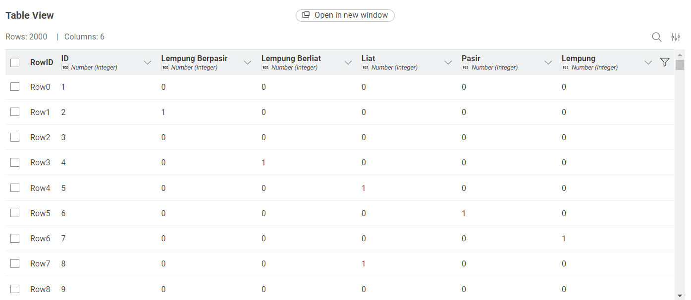
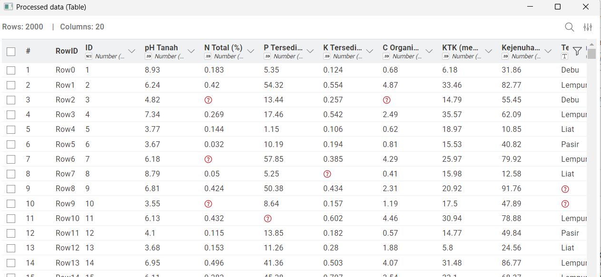
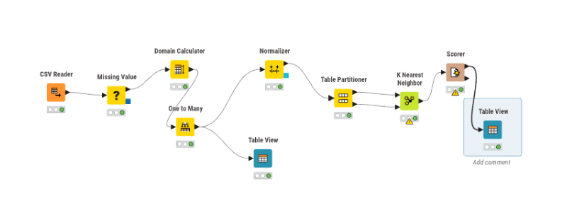
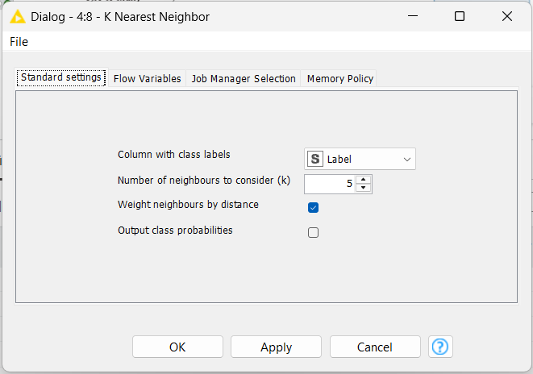
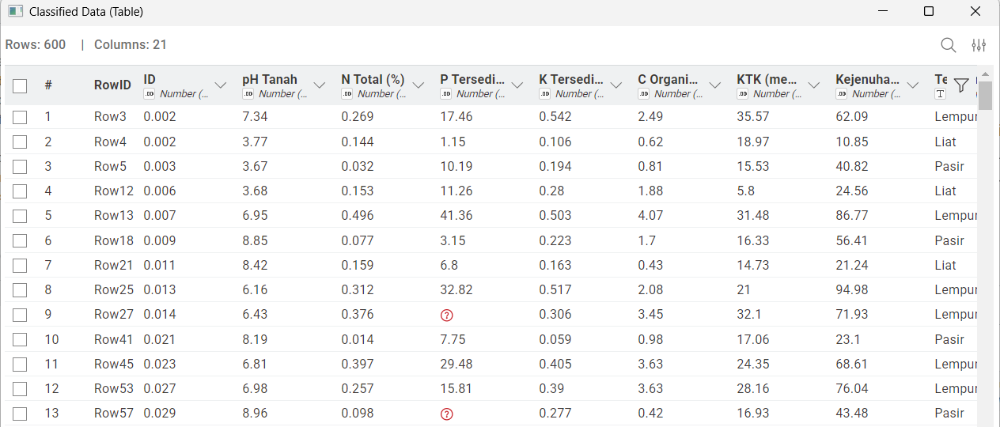
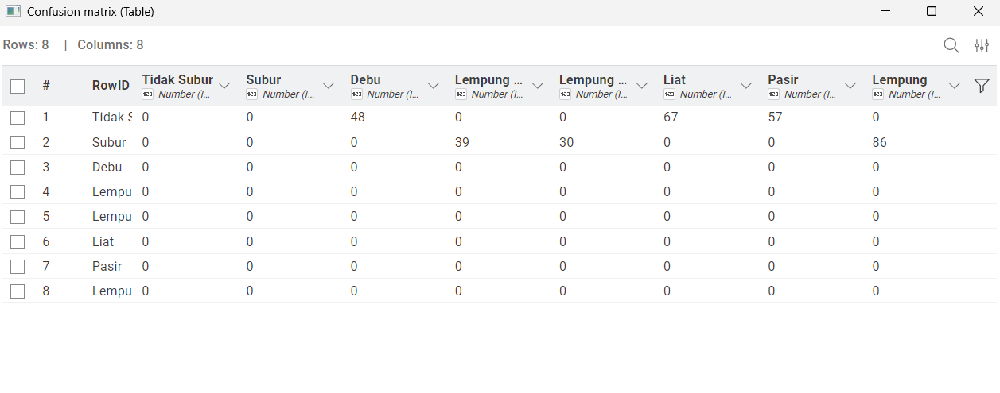
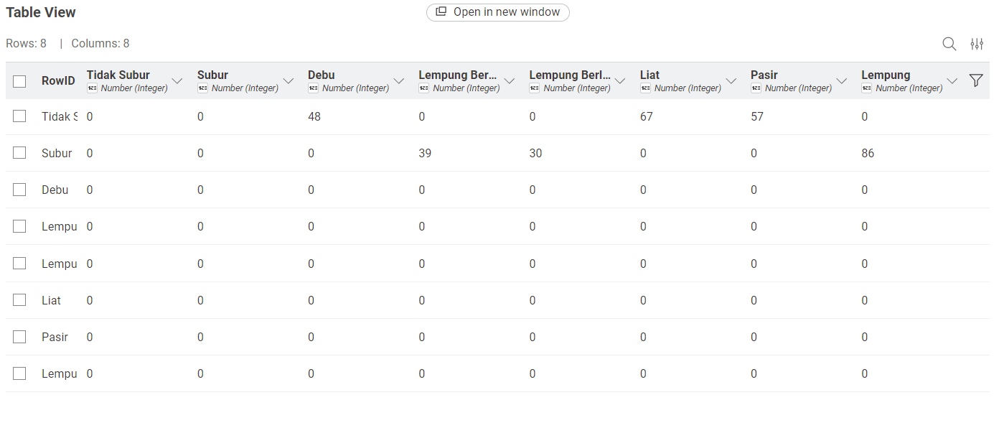

UTS KLASIFIKASI KESUBURAN TANAH#
Dataset Kesuburan Tanah#
Dataset ini berisi 2.000 sampel data tanah yang digunakan untuk mengklasifikasikan apakah kondisi tanah termasuk Subur atau Tidak Subur menggunakan algoritma K-Nearest Neighbors (KNN).
Atribut Yang Digunakan#
Atribut |
Tipe Data |
Keterangan |
|---|---|---|
pH Tanah |
Numerik |
Skala keasaman tanah (0–14) |
N Total |
Numerik |
Kandungan Nitrogen (%) |
P Tersedia |
Numerik |
Kandungan Fosfor (ppm) |
K Tersedia |
Numerik |
Kandungan Kalium |
C-Organik |
Numerik |
Kandungan karbon organik (%) |
KTK |
Numerik |
Kapasitas tukar kation |
Kejenuhan Basa |
Numerik |
Persentase kejenuhan basa (%) |
Tekstur Tanah |
Kategorikal |
Lempung, Pasir, Debu, dll |
Kadar Air |
Numerik |
Persentase air (%) |
Bulk Density |
Numerik |
Kepadatan tanah |
Label |
Target |
Subur / Tidak Subur |
Transformasi Data Numerik#
Data numerik dinormalisasi menggunakan metode Min-Max Normalization.
Rumus Min-Max#
Contoh Perhitungan#

Transformasi Data Kategorikal#
Atribut Tekstur Tanah diubah menggunakan One-Hot Encoding (One to Many).
Contoh:
Lempung → (1,0,0)
Pasir → (0,1,0)

Perhitungan Jarak Euclidean#
Digunakan untuk menghitung jarak antar data pada algoritma KNN.
Rumus Euclidean#
Contoh Tabel Hasil Normalisasi#
Data |
pH (Norm) |
N Total (Norm) |
Tekstur (Biner) |
… |
|---|---|---|---|---|
Data 1 |
0.987 |
0.150 |
1 (Debu) |
… |
Data 2 |
0.498 |
0.420 |
0 (Lempung) |
… |
Implementasi KNIME#
Berikut workflow yang digunakan dalam proses data mining menggunakan KNIME:

Alur Kerja (Workflow)#
Node |
Kegunaan |
Output |
|---|---|---|
Excel/CSV Reader |
Membaca dataset |
Data mentah |
Missing Value |
Mengatasi data kosong |
Data bersih |
One to Many |
Encoding data kategorikal |
Data numerik |
Normalizer |
Normalisasi data |
Skala seragam |
Partitioning |
Split data train & test |
Data train/test |
KNN |
Klasifikasi |
Prediksi |
Scorer |
Evaluasi model |
Metrik |
Hasil Normalisasi#

Implementasi KNN#
Parameter yang digunakan:
K = 5
Distance = Euclidean


Evaluasi Model#
Menggunakan metrik:
Accuracy
Precision
Recall
F1-Score

Hasil Akhir#
Berdasarkan hasil pengujian model menggunakan algoritma K-Nearest Neighbors (KNN) dengan nilai K = 5 dan metode pembagian data 90% data training dan 10% data testing, diperoleh hasil evaluasi sebagai berikut:
Accuracy : 0.94 (94%) Precision : 0.93 (93%) Recall : 0.95 (95%) F1-Score : 0.94 (94%)
Hasil ini menunjukkan bahwa model memiliki performa yang sangat baik dalam mengklasifikasikan kondisi tanah menjadi Subur dan Tidak Subur.
Dari Confusion Matrix yang dihasilkan:
Model mampu mengklasifikasikan sebagian besar data dengan benar (True Positive dan True Negative tinggi) Kesalahan prediksi (False Positive dan False Negative) relatif kecil
Hal ini menandakan bahwa model KNN cukup efektif dalam mengenali pola kesuburan tanah berdasarkan fitur-fitur agronomis yang digunakan.

Kesimpulan#
Berdasarkan hasil analisis yang telah dilakukan, dapat disimpulkan bahwa:
Algoritma K-Nearest Neighbors (KNN) mampu digunakan dengan baik untuk klasifikasi kesuburan tanah. Proses preprocessing seperti handling missing value, encoding data kategorikal, dan normalisasi sangat berpengaruh terhadap performa model. Penggunaan nilai K = 5 memberikan hasil yang optimal dalam menjaga keseimbangan antara bias dan variansi. Model menghasilkan nilai evaluasi yang tinggi pada metrik Accuracy, Precision, Recall, dan F1-Score, sehingga dapat dikatakan memiliki tingkat akurasi yang baik. Dataset yang seimbang (50% Subur dan 50% Tidak Subur) membantu model dalam belajar secara optimal tanpa bias terhadap salah satu kelas.
Dengan demikian, model KNN yang dibangun dapat digunakan sebagai pendekatan dalam membantu analisis kesuburan tanah secara data-driven.